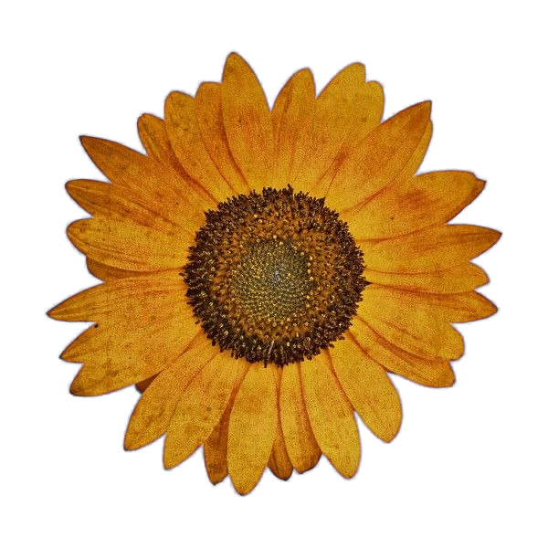
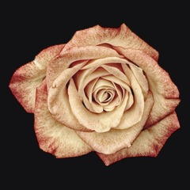

Hoa Hướng Dương
✦ Chạm vào chú mèo xem chuyện gì xảy ra ✦

Hiện tại

Tiếp theo →Chiêm ngưỡng vẻ đẹp kiêu hãnh họ Cúc
Asteraceae là một trong những họ thực vật có hoa phong phú và đa dạng nhất thế giới, bao gồm hơn 32.000 loài mang cấu trúc hình học mặt trời tự nhiên hoàn mỹ.
— Christine R.